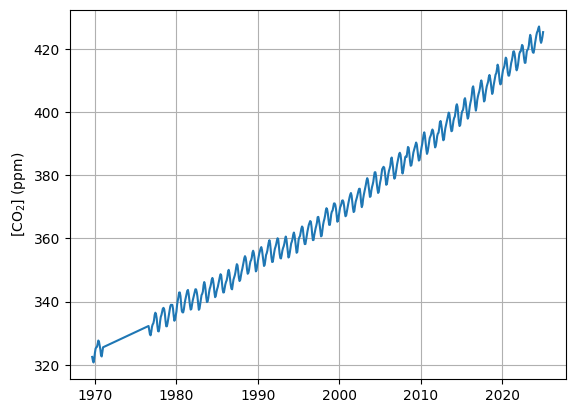
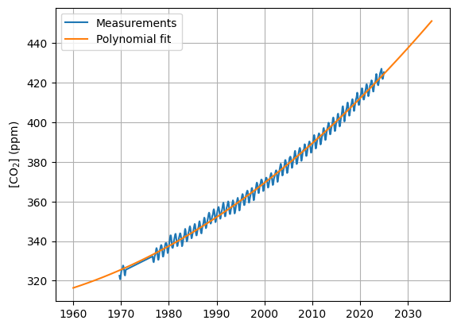
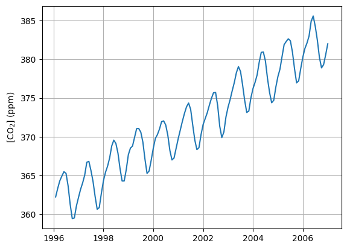
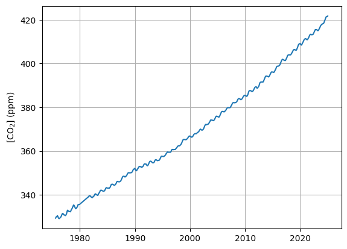
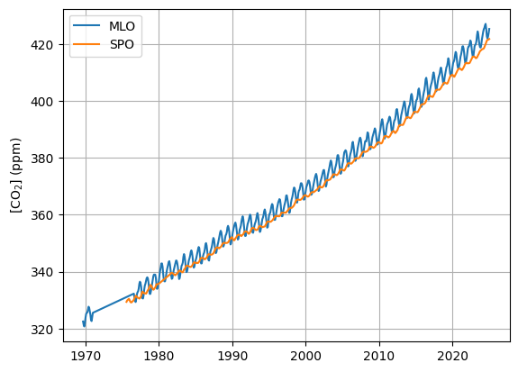
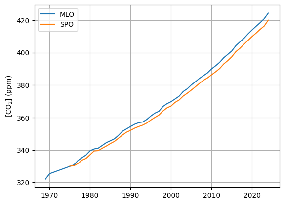
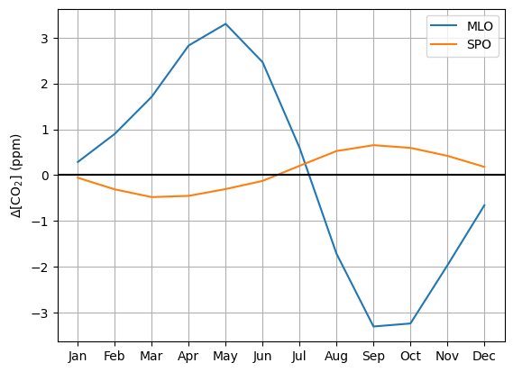

Show me the code
# Here we clear the memory
%reset -f
# Here we import packages that we will use
import numpy as np
import matplotlib.pyplot as plt
import pandas as pdMatplotlib is building the font cache; this may take a moment.Gerbrand Koren (g.b.koren@uu.nl)
This is the first practical of the course Natural Processes (GEO1-2412). In the computer practicals we will explore different processes that are related to the global carbon cycle and that link to the topics that are discussed during the lectures. This first practical will explore measurements of \(\mathrm{CO_2}\) concentrations from the atmosphere collected by the US National Oceanic and Atmospheric Administration (NOAA) since the 1960s. The goal of this assignment is to practice data analysis in Python, describe patterns in observed \(\mathrm{CO_2}\) concentrations and relate this to natural processes.
ctrl + enter or by selecting a cell and pressing the run button in the toolbar on top. If this gives an error then make sure that you have selected the right kernel.
# Here we clear the memory
%reset -f
# Here we import packages that we will use
import numpy as np
import matplotlib.pyplot as plt
import pandas as pdMatplotlib is building the font cache; this may take a moment.student_number=…). This will automatically personalize the questions. Make sure that the student number is typed correct, this will also be used when grading the assignment. When working together in a pair then just choose one of the student numbers.
# Fill in your student number in the line below
student_number = 0NOAA has many monitoring stations across the world to sample air and measure concentrations of various gases, including \(\mathrm{CO_2}\). The four most important stations are the Baseline Observatories that are distributed across a latitudinal gradient (see Fig. 1).

Figure 1: Locations of NOAA Baseline Observatories, from top to bottom: Barrow (Alaska), Mauna Loa (Hawaii), American Samoa, South Pole (Antarctica) (source: NOAA)
These measurement stations are all positioned in relatively remote places to have fewer local disturbances (from fossil fuel combustion) which makes measurements more informative on large-scale atmospheric changes.
We will first explore \(\mathrm{CO_2}\) measurements from Mauna Loa (often abbreviated as “MLO”). The station (Fig. 2) is located on a volcano at an altitude of 3400 m and measurements have started around 1960, when there was much less concern about \(\mathrm{CO_2}\) and climate change. We will now explore a dataset that was taken from https://gml.noaa.gov/aftp/data/trace_gases/co2/flask/surface/txt/co2_mlo_surface-flask_1_ccgg_month.txt

Figure 2: Mauna Loa (MLO) measurement station (source: NOAA)
# This will read the MLO dataset and give names to the columns
mlo = pd.read_fwf(
"co2_mlo_surface-flask_1_ccgg_month.txt",
skiprows=54,
header=None,
names=["code", "year", "month", "co2"],
)
# This line displays the start and end of the MLO dataset on screen
mlo| code | year | month | co2 | |
|---|---|---|---|---|
| 0 | MLO | 1969 | 8 | 322.50 |
| 1 | MLO | 1969 | 9 | 321.36 |
| 2 | MLO | 1969 | 10 | 320.74 |
| 3 | MLO | 1969 | 11 | 321.98 |
| 4 | MLO | 1969 | 12 | 323.78 |
| ... | ... | ... | ... | ... |
| 594 | MLO | 2024 | 8 | 422.72 |
| 595 | MLO | 2024 | 9 | 421.88 |
| 596 | MLO | 2024 | 10 | 422.57 |
| 597 | MLO | 2024 | 11 | 423.81 |
| 598 | MLO | 2024 | 12 | 425.28 |
599 rows × 4 columns
frac_year by running the code below.
# Define fractional year variable
mlo["frac_year"] = mlo["year"] + mlo["month"] / 12.0
# Display the first and last entries of the MLO dataset
mlo| code | year | month | co2 | frac_year | |
|---|---|---|---|---|---|
| 0 | MLO | 1969 | 8 | 322.50 | 1969.666667 |
| 1 | MLO | 1969 | 9 | 321.36 | 1969.750000 |
| 2 | MLO | 1969 | 10 | 320.74 | 1969.833333 |
| 3 | MLO | 1969 | 11 | 321.98 | 1969.916667 |
| 4 | MLO | 1969 | 12 | 323.78 | 1970.000000 |
| ... | ... | ... | ... | ... | ... |
| 594 | MLO | 2024 | 8 | 422.72 | 2024.666667 |
| 595 | MLO | 2024 | 9 | 421.88 | 2024.750000 |
| 596 | MLO | 2024 | 10 | 422.57 | 2024.833333 |
| 597 | MLO | 2024 | 11 | 423.81 | 2024.916667 |
| 598 | MLO | 2024 | 12 | 425.28 | 2025.000000 |
599 rows × 5 columns
# Show CO2 time series for Mauna Loa
plt.figure()
plt.plot(mlo["frac_year"], mlo["co2"])
plt.ylabel("[CO$_2$] (ppm)")
plt.grid()
plt.show()
(enter here your answer to Q1)
mlo_fit) that first performs a polynomial fit through the MLO measurements and then makes a prediction for a selected range of years (fit_range). The output will then be visualized. Explore visually the agreement between the measured and fitted \(\mathrm{CO_2}\) when varying the fit_degree between 1, 2 and 3.
# Define polynomial fit function for MLO
def mlo_fit(fit_range, fit_degree):
x_obs = mlo["frac_year"]
y_obs = mlo["co2"]
coeffs = np.polyfit(x_obs, y_obs, fit_degree)
fit = np.poly1d(coeffs)
fit_prediction = fit(fit_range)
return fit_prediction
# Select fit properties
fit_degree = 2
fit_range = np.linspace(1960, 2035)
# Dipsplay CO2 measurements and fit
plt.figure()
plt.plot(mlo["frac_year"], mlo["co2"], label="Measurements")
plt.plot(fit_range, mlo_fit(fit_range, fit_degree), label="Polynomial fit")
plt.ylabel("[CO$_2$] (ppm)")
plt.legend()
plt.grid()
plt.show()
mlo_fit) also to provide us an estimate of \(\mathrm{CO_2}\) in a single year. Test the code below for different values of fit_year and fit_degree. (Note that polynomial fit functions can become very unreliable outside the range where they were trained on.)
# Estimate CO2 value in selected year
fit_year = 2030
fit_degree = 1
print(
f"The estimated CO2 concentration in year {fit_year} is {mlo_fit(fit_year, fit_degree):.1f} ppm."
)The estimated CO2 concentration in year 2030 is 427.7 ppm.(enter here your answer to Q2)
# Select random decade from MLO record
np.random.seed(student_number)
start_year = int(30 * np.random.rand()) + 1980
mlo_zoom = mlo[(mlo["year"] >= start_year) & (mlo["year"] <= start_year + 10)]
# Plot decade from MLO record
plt.figure()
plt.plot(mlo_zoom["frac_year"], mlo_zoom["co2"])
plt.ylabel("[CO$_2$] (ppm)")
plt.grid()
plt.show()
(enter here your answer to Q3)
We will now also include data from a measurement station from the Southern Hemisphere: South Pole (often abbreviated as “SPO”) in the analysis (Fig. 3). This dataset that was taken from https://gml.noaa.gov/aftp/data/trace_gases/co2/flask/surface/txt/co2_spo_surface-flask_1_ccgg_month.txt

Figure 3: South Pole (SPO) measurement station (source: NOAA)
(enter here your answer to Q4)
frac_year and plot the \(\mathrm{CO_2}\) concentration. Compare the graph with the MLO graph produced earlier and note the main differences.
# Read SPO data and define fractional year variable
spo = pd.read_fwf(
"co2_spo_surface-flask_1_ccgg_month.txt",
skiprows=53,
header=None,
names=["code", "year", "month", "co2"],
)
spo["frac_year"] = spo["year"] + spo["month"] / 12.0
# Display SPO CO2 time series
plt.figure()
plt.plot(spo["frac_year"], spo["co2"])
plt.ylabel("[CO$_2$] (ppm)")
plt.grid()
plt.show()
# Show graph with MLO and SPO dataset combined
plt.figure()
plt.plot(mlo["frac_year"], mlo["co2"], label="MLO")
plt.plot(spo["frac_year"], spo["co2"], label="SPO")
plt.ylabel("[CO$_2$] (ppm)")
plt.legend()
plt.grid()
plt.show()
# Calculate annual means for MLO and SPO dataset
mlo_annual_mean = mlo.groupby("year")["co2"].mean().reset_index()
spo_annual_mean = spo.groupby("year")["co2"].mean().reset_index()
# Show annual means for MLO and SPO
plt.figure()
plt.plot(mlo_annual_mean["year"], mlo_annual_mean["co2"], label="MLO")
plt.plot(spo_annual_mean["year"], spo_annual_mean["co2"], label="SPO")
plt.ylabel("[CO$_2$] (ppm)")
plt.legend()
plt.grid()
plt.show()
(enter here your answer to Q5)
# Determine trend in CO2
mlo["co2_trend"] = mlo["co2"].rolling(window=12, center=True).mean()
spo["co2_trend"] = spo["co2"].rolling(window=12, center=True).mean()
# Calculate detrended CO2
mlo["co2_detrended"] = mlo["co2"] - mlo["co2_trend"]
spo["co2_detrended"] = spo["co2"] - spo["co2_trend"]
# Determine seasonal cycle for detrended CO2 concentrations
mlo_monthly_mean = mlo.groupby("month")["co2_detrended"].mean().reset_index()
spo_monthly_mean = spo.groupby("month")["co2_detrended"].mean().reset_index()
# Define list of months
months = [
"Jan",
"Feb",
"Mar",
"Apr",
"May",
"Jun",
"Jul",
"Aug",
"Sep",
"Oct",
"Nov",
"Dec",
]
# Show detrended seasonal cycle
plt.figure()
plt.plot(months, mlo_monthly_mean["co2_detrended"], label="MLO")
plt.plot(months, spo_monthly_mean["co2_detrended"], label="SPO")
plt.axhline(0, color="k")
plt.ylabel("$\Delta$[CO$_2$] (ppm)")
plt.legend()
plt.grid()
plt.show()<positron-console-cell-14>:21: SyntaxWarning: invalid escape sequence '\D'
(enter here your answer to Q6)
(enter here your answer to Q7)
Make sure to submit this Notebook with your added answers to Brightspace